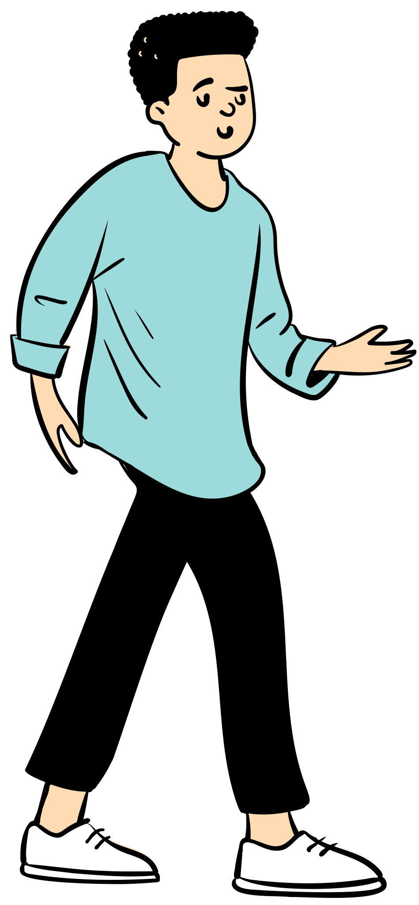
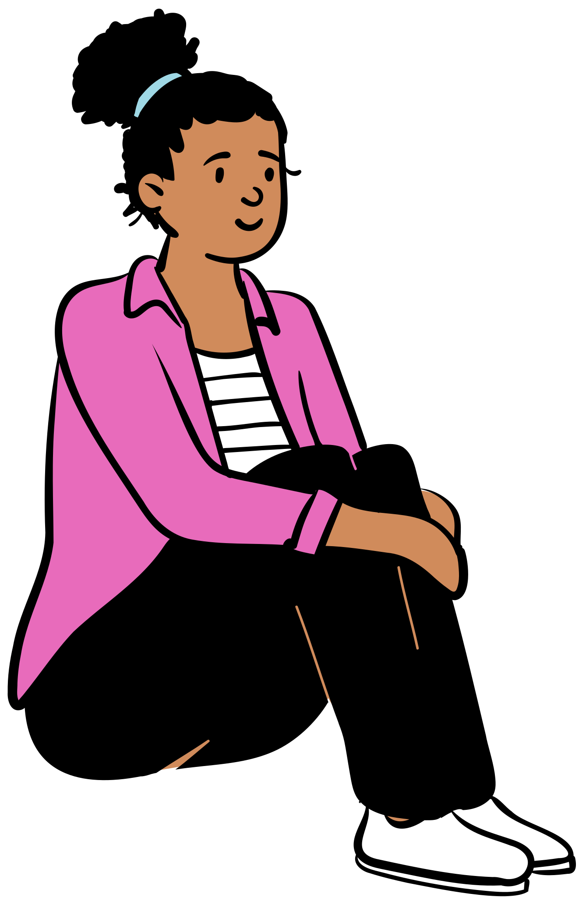
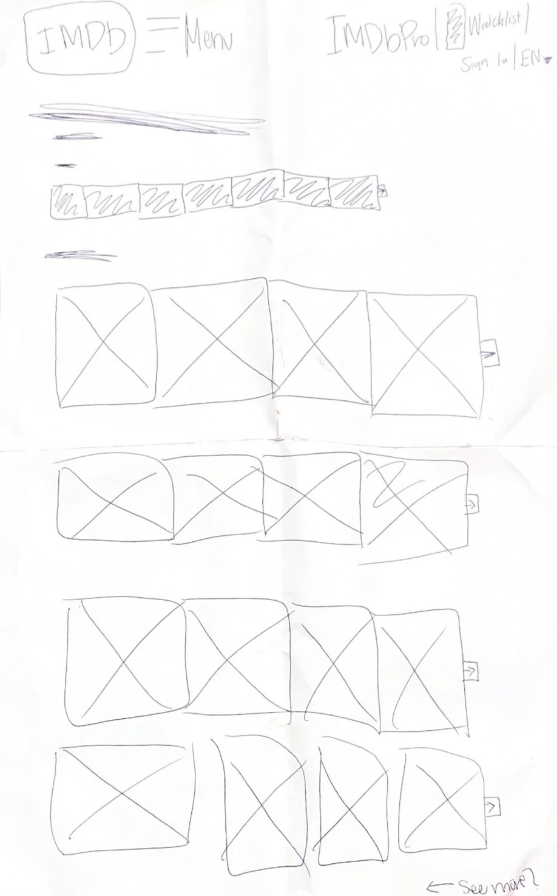
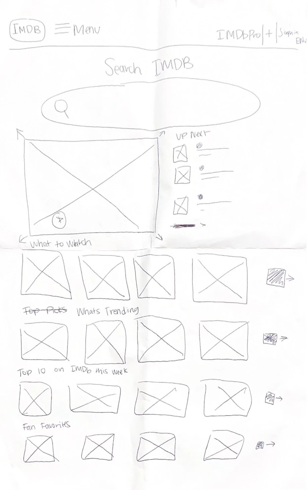
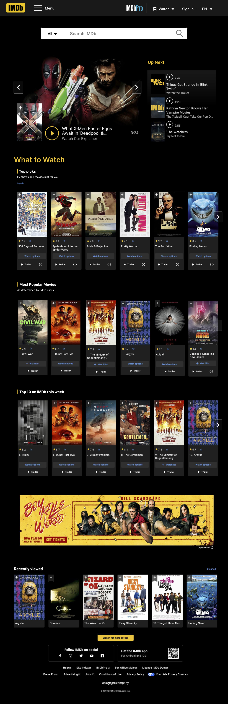
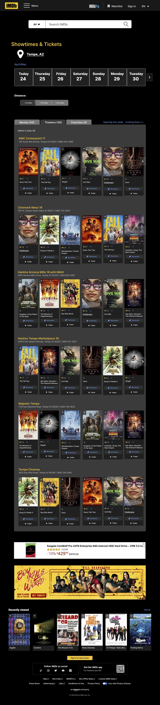

Redesigning IMDb: From User Frustration to Cleaner Navigation
A research-driven redesign of the world's largest movie database, grounded in usability testing with 8 real users.
The project
IMDb is the world's largest movie database. So why was it so hard to use?
IMDb holds an immense amount of content — but that content was getting in its own way. Our team set out to evaluate and redesign the usability and information architecture of IMDb's website. Through usability testing with 8 real users, we uncovered the friction points that were making one of the internet's most visited sites frustrating to navigate. This case study showcases my personal redesign, grounded in our shared group research.
Research process
Testing with real users before designing anything.
Each team member conducted 2 usability sessions — 4 in-person and 4 virtual via screen sharing — for a total of 8 participants. We recruited users aged 18 to 25 who regularly watch movies and TV, are familiar with modern technology, and are likely to use IMDb to look up media information. Each session included pre-test questions to gauge familiarity with IMDb, task-based scenarios such as finding an actor's latest role or comparing movies, and post-test questions to reflect on experience and frustrations.
Pre-test Questions
Gauged participants familiarity with IMDb and their general media browsing habits before beginning any tasks.
Task-based Scenarios
Observed users completing real tasks: finding an actor's latest role, reading reviews, and comparing two movies.
Post-test Questions
Asked participants to reflect on their experience, share preferences, and describe what frustrated them most.
User personas
Who we were designing for.

Alex Turner Retail Worker, Age 25Alex loves TV shows and movies and frequently visits IMDb to stay updated on his favorite actors, upcoming releases, and trending content. His moderate tech knowledge and frequent phone use make IMDb an ideal hub for exploring entertainment.
Goals
- Stay informed about movies and TV shows
- Quickly find ratings, reviews, and cast information
- Use websites that are fast and easy to navigate
Frustrations
- Websites that load slowly
- Complicated or cluttered user interfaces

Lindsey Thompson College Student, Age 21Lindsey is a busy college student who enjoys staying active and connected. Although she has a strong grasp of modern technology and uses the internet daily, Lindsey is not very familiar with IMDb — presenting an opportunity to improve discoverability for new users.
Goals
- Find movies and TV shows that fit her interests
- Discover entertainment quickly during short study breaks
- Use platforms that are easy to use, intuitive, and visually engaging
Frustrations
- Not familiar with IMDb's interface and features
- Struggles to find time for entertainment due to a busy schedule
Key issues identified
What 8 users told us without saying a word.
By watching users navigate IMDb — not just asking them about it — we identified three consistent pain points that appeared across all 8 sessions.
Homepage Clutter
Too much information on one screen. Users did not know where to look first and felt overwhelmed before completing any task.
Ad Overload
Distracting banner and video ads interfered with tasks in all 8 sessions — the most consistent pain point across every participant.
Too Many Clicks
It took several steps to access basic information. Users expected fewer clicks to reach the content they were looking for.
Real feedback
In their own words.
"I would prefer if the website design was more minimal and if there were more opportunities for discussion and reviews from the average audience."
In-person participant
"The advertisement placements can be frustrating."
Virtual participant
"Not easy to use, unnecessary clicking sometimes."
Virtual participant
Sketching solutions
Paper first, pixels second.
Before opening Figma I sketched out my redesign solutions on paper. Starting with the homepage and working through the Showtimes and Tickets page, I mapped out how to reduce clutter, elevate the search function, and reorganize content into clearer sections.


Design solutions
Two pages. Five decisions that mattered.
Homepage
I made two big improvements to the homepage. First I enlarged the search bar and moved it to the top of the page under the navigation — because every user preferred search over any other method of finding content. Second I limited the homepage to three content categories to reduce the overwhelming overflow of information on the current site.
- Enlarged search bar moved to top of page
- Homepage limited to three clearly labeled content sections: New Releases, Hidden Gems, Top Picks
- Featured older and niche movies alongside blockbusters
- Reduced banner ad size and moved it to the bottom
Showtimes and Tickets
The Showtimes and Tickets page stood out to my users as particularly frustrating. I updated its outdated design to match IMDb's brand identity, continued the search bar pattern for consistency, and changed the layout from a never-ending vertical list to a horizontal scroll panel showing six movies at a time.
- Updated visual design to match IMDb brand identity
- Consistent search bar placement across all pages
- Horizontal scroll panels replacing the long vertical list
- Users can view six movies at a time and click through
The redesign
High fidelity. Research informed.
Using the collective research insights and my individual analysis, I created high fidelity wireframes in Figma for both the homepage and the Showtimes and Tickets page.


Reflection
What I learned.
This project taught me how to conduct and analyze usability testing in a collaborative setting — and how even a globally recognized platform can have significant usability gaps. Watching users struggle with IMDb in real time made the research feel urgent and purposeful.
Working within a shared research process while creating my own individual design solution pushed me to think critically about how to translate group insights into personal design decisions. The research was collective. The interpretation was mine.
What worked
Task-based usability testing gave us concrete, observable behavior instead of just opinions. Watching users navigate — not just asking them about it — revealed friction points we never would have anticipated.
What I would do differently
I would do several rounds of user testing with better structured tasks and clearer scenarios. It was hard to know what to look for the first time — more preparation would have made the sessions more focused and insightful.
What is next
I would love to test my redesigned screens with real users to validate whether my solutions actually solved the problems we identified — closing the loop between research and design.